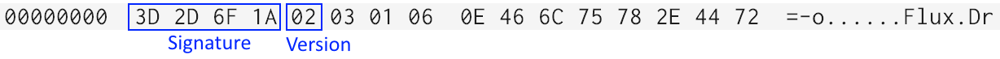
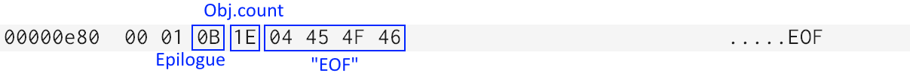
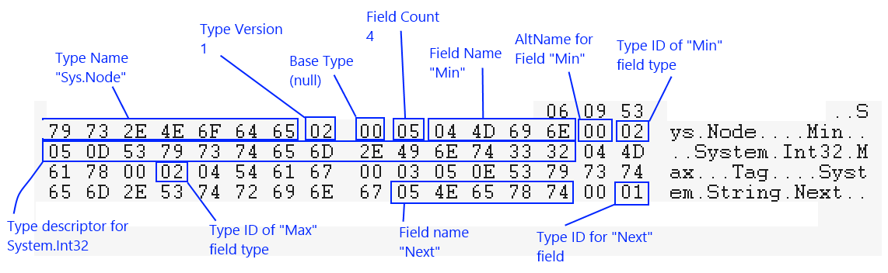
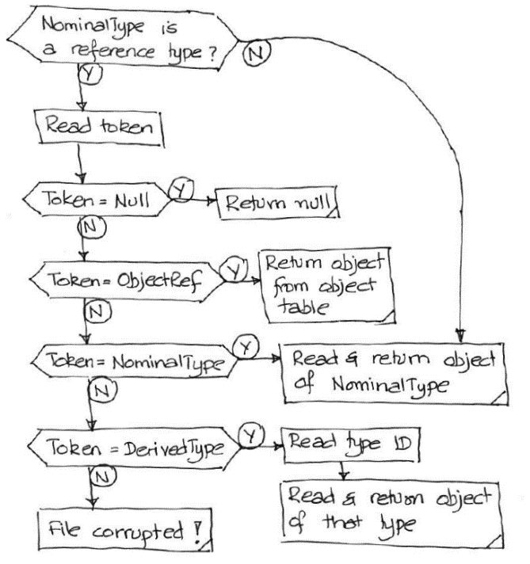

1003AuGoldEncoding
product: flux org: metamation tags: [metamation, knowledge-base, flux, notes, legacy, dev] type: note project: Flux source: Notes/Dev/1003.AuGoldEncoding.ftx updated: 2026-07-13
1003 ◉ Au (Gold) files: stream encoding
[!info]- Revision history
Rev Date Author Note V1 2013-11-19 AV
Preamble
The native file format for Flux is known as the Au (or Gold) format. Au files are essentially ZIP files, which contain various streams of data. Each stream is typically encoded in the Au stream format, and contains a significant chunk of a Part, for example a Drawing2 could be saved in a stream, or a Model3. A full description of the Au file format therefore needs to focus on the encoding (or representation) found in each Au stream, as well as the actual organization of the container Zip file.
This document discusses the bit-pattern of bytes inside an Au stream. Fluxnote [TBD] discusses
the organization of the container ZIP file.
Au files are binary files that are designed to be space efficient and self-describing. By this, we mean that the metadata for all types that appear in an Au file are included within the file itself. Because of this, the file format is very tolerant of versioning. Backward compatibility is easy to achieve because of this, and we are aiming, in fact, for forward compatibility1, which is more difficult.
Primitives
.Net types
The following .Net primitive types are saved in Flux files using a bit-pattern similar to that produced by BitConverter (that, is using a little-endian memory-layout byte ordering)2
int, uint, short, ushort, long, ulong, byte, sbyte, float, double, char, bool
DateTime objects are written out as 64-bit integers (using the DateTime.FromBinary and DateTime.ToBinary methods to do the conversion).
Byte arrays (byte[]) are common in Flux and are therefore treated as primitive types. A byte array is written by first writing a count as an IntV (see below for definition of this variable-length integer type), followed by the actual bytes of data. A null byte-array is indicated by a byte-count of -1.
Strings are also treated as primitive types. A string is first encoded as a byte array using the UTF8 encoding, and is then written out in a manner similar to a byte-array. That is, an IntV describing the count in bytes (of the UTF8 encoded packet), followed by the actual bytes. A null string is indicated by a byte count of -1.
Guids are treated as primitive types, and are written out as a 16-byte array (that can be obtained using Guid.ToByteArray)
Variable length integers (IntV)
In many places in an Au file, it is necessary to store small integers (for example, the lengths of strings, the lengths of byte-arrays, type IDs, object IDs). These integers are typically small, but we do not want to impose any arbitrary restrictions (that they are limited to 16 bits, for example). Such integers are represented in Flux files using a variable-length representation.
An IntV encodes an integer into a sequence of bytes, each byte of which holds 7 bits from the integer (in the lower 7 bits). The highest bit is used as a continuation bit. If this is set, more bytes follow. The bits from the integer are taken LSB first. It is perhaps simpler to understand code than to describe this
public unsafe void WriteIntV (int n) {
// We first add 1 to the value making it in the range -1..int.Max-1
n++;
for (; ; ) {
// If the residual value is less than 128, write it out with the
// MSB set to 0 (the marker indicating no-more-data) and exit
if (n < 128) { Write (&n, 1); break; }
// Otherwise, write out the lowest 7 bits with with the MSB set to 1
// to indicate that more data follows.
int m = (n & 127) | 128; Write (&m, 1);
// Shift out the 7 bits we've just written and continue
n >>= 7;
}
}
As can be seen in this code, IntV encoding can store values from -1 to int.MaxValue-1. The value of -1 is supported since it is often used a marker to indicate 'no-data'.
Flux primitives
These Flux types are treated as primitives, since they occur very frequently in Flux files. They are read and written atomically since they are all structs whose layout in memory is known. More importantly, this means that these structs should never be changed in the future - a Matrix3 is now locked to always taking up exactly 132 bytes in memory, for example.
Point2, Point2f, Point3, Point3f, Vector2, Vector3, Vector3f, Vector3h, Bound2, Bound3,
Size2, Size3, Matrix2, Matrix3, Matrix3f, Color32
More types may be added to this list in the future3.
File layout
An Au file does not have much of an overall file layout to it. First, there is a header that contains these 2 fields
uint Signature; // Au file signature, always 0x1A6F2D3D[^4]
byte Version; // Au file metadata version (currently 2)
The Signature and Version number take up the first 5 bytes. Here is a typical Au file header:

Following this header, there is exactly one top level object stored in the Au file. This object could be a complex object like a Part, or a nested layout and could contain hundreds or thousands of sub-objects inside. However, at the top, there is exactly one object. If you want to save multiple objects into an Au file, create a container object, put all of them in there, and save the container.
Following this single top-level object, there is trailer that consists of:
- The Epilogue token
- The count of reference objects in the file (written as an IntV)
- The string "EOF"

This can be used to visually detect truncation - if the file does not end with the text EOF, it is truncated. Above is a picture of an end-of-file, with an object count of 29 objects (which is expressed as 1E when encoded as an IntV).
Au Tokens
Tokens are single-byte values that are like the keywords of an Au file. They are used to delimit distinct chunks of the file, and guide the parsing process. These are the possible token values; the meanings of these will become more obvious as you read the rest of the document.
| Token | Value | Meaning |
|---|---|---|
| Null | 1 | A null pointer or reference |
| NominalType | 2 | An object follows, that is of the nominal or expected type |
| DerivedType | 3 | An object follows, that is of a derived type |
| ObjectRef | 4 | Object has already been appeared in this stream, an integer object ID follows which is a cross-reference to that object |
| PrimType | 5 | A type descriptor for a primitive type follows |
| ClassType | 6 | A type descriptor for a class type follows |
| StructType | 7 | A type descriptor for a struct type follows |
| ListType | 8 | A type descriptor for a list type follows (simple vector of values) |
| DictType | 9 | A type descriptor for a dictionary type follows |
| EnumType | 10 | A type descriptor for an enumeration type follows |
| Epilogue | 11 | File epilogue follows (object count, EOF) |
Type Descriptor
If there is no other header other than these 3 fields, then where is the metadata saved? It is saved in scattered places all over the file, at the point of first use. That is, the first time we refer to a type in a Flux file, its metadata follows immediately. At various points in an Au file, we want to provide a reference to a type. These are done using type IDs, which are integers starting from 0 and going consecutively4. These IDs are local to a particular Au file, and simply list types in the order in which they are encountered when reading an Au file.
At various places in an Au file where you expect to find a reference to a type, you will first read in an integer that is the type ID. If this is the first time this type ID is seen in this file, it is followed immediately by a Type Descriptor. That is, any time you read in an IntV representing a type ID, you should be prepared to read the corresponding type descriptor immediately afterwards. There are several kinds of type descriptors, depending on the nature of the type.
Primitive types
These type descriptors are written out like this:
- The PrimType token
- The full name of the type (like "System.Int32")
This is also the case with all Flux-defined primitives like Flux.Point2. It is assumed that the reader implicitly knows what a Flux.Point2 is, and no further definition is required other than the name.
Enumeration types
- The EnumType token
- The type ID for the underlying type of the enumeration (like Int32 or UInt64)
- The full name of the type (like Flux.ELType)
Class and Struct types
Class and struct types are written out by writing out these fields:
- The ClassType or StructType token
- The full name of the type (like "Flux.E3Plane")
- The version number of the type (an IntV)
- Base type ID (or -1 for no base type, written as an IntV)
- Field count (only the fields that are serialized, written as an IntV)
- Then, for each field:
- Field name
- Alternative name for the field (human readable name)
- The type-ID for the field's type (written as an IntV)
Note the recursive nature of this type descriptor. To specify the base type, or the field type, it is necessary to write out a type ID. It is possible that this type ID may refer to a type that has not yet been encountered in the file. In this case, the entire type descriptor for that type will be inserted right there. This means that the type descriptor for a type may be found completely embedded within the type descriptor of another type.
Suppose we have a simple type like this
namespace Sys {
public class Node {
public int Min;
public int Max;
public string Tag;
public Node Next;
}
}
Here is how the type descriptor for this type would look, if there were the first type that appeared in a file:

When trying to understand this diagram, it helps to remember that many fields are stored as IntV, and the IntV encoding will represent a small number N as N+1 in the file. So, for example, the field count for this type is 4, which is encoded as 05 in the file.
The first time the System.Int32 type ID appears (as the type for the Min field), it is immediately followed by the full type descriptor. However, the next time it appears (as the type ID for the Max field), only the type ID is emitted since the type has been seen already. So, in this snippet, types with IDs 0 (Sys.Node), 1 (System.Int32) and 2 (System.String) are introduced and their types are fully defined.
Code that parses the type descriptors must therefore be recursive, and must be prepared to encounter a fresh new type descriptor even before the current one is fully parsed. Code that parses objects in an Au file will have to have the same flexibility. Just as type descriptors are introduced at the point of first use, so are entire objects.
Aside: Type descriptors for classes and structs can sometimes be written out partially. That is, the name and base-type are written out but the list of fields is not output. This is indicated by writing out a field count of -1. This is a partially specified type, and we cannot yet serialize or deserialize objects of this type. However, before the first object of this type is actually written out, the field list for the type is written out. The reader can keep track of such partially specified types (identified by their -1 field counts), and should anticipate and read the field list at the same point (just when the first object of that type is going to be read out).
This optimization is just to avoid storing Metadata for objects that we are never going to write out. For example, consider writing out a Part whose BendTech is not populated (it is null). When writing out the metadata for the Part, only a partial description of the BendTech class metadata is written out. If we had to write out the full description, by recursive inclusion we would end up writing out the Metadata for BendSetup, BendOp, BendMachine, BendMount etc, which is not necessary.
List types
Au files treat lists (one-dimensional vectors) as special types. We ignore the actual internal data type used to implement the list (it could be an Array, a List
- The ListType token
- The type-ID of the element type (written as an IntV)
As always when a Type ID is written, if this is the first time this type ID is encountered in the file, the type descriptor follows immediately.
Dict types
Au files treat dictionaries (associative arrays) specially. As with lists, we ignore the actual internal type used to store this in memory, and store dictionaries in a unified format on disk. The type descriptors for Dict types are written like this:
- The DictType token
- The type-ID of the key element type (written as an IntV)
- The type-ID of the value element type (written as an IntV)
Object layout
Nominal type
Now that we understand how type descriptors are written out, we can try to figure out how objects are written out. An important concept to understand this is to notion of nominal type. At every point in a file where we are going to read in an object, we have an expectation of what the type of that object is going to be. For example, suppose we are reading a List
The actual layout of the object depends strongly on whether it must be of the nominal type, or it could be of some derived type. For example, when reading the elements of a List
In all such situations where the actual type may differ from the nominal type, we will find one of these two tokens first: The NominalType token will be encountered if the object that follows is of the nominal type exactly. The DerivedType token will be encountered if the object that follows is of some derived type. In this case, the token will be followed immediately by the Type-ID of the actual type of the object . Then, the actual object data will follow.
Note that this whole diversion is only in situations where the actual type can differ from the nominal type. When we are reading a List
A special case is when we start reading an Au file. At this point, we have no real notion of the nominal type, so we start off by assuming a nominal type of System.Object. That is never the actual data type of the top level object in an Au file, so it follows that the first token in the Au file after the header is invariably DerivedType (indicating that a type derived from System.Object follows). And, that token will invariably be followed by the type-ID and the type descriptor of the first object.
Nulls and cross-references
When an object is expected to be read in from an Au file, we have some special situations. The object may be null, which is indicated by just the Null token.
The object could be one that has appeared already in the file. This is possible with any cross-linked data, as is common in Flux files. In this case, we don't obviously repeat the data of the object, but simply insert an ObjectRef token, followed by the object ID of the object (written as an IntV).

Objects are assigned object IDs in the order in which they appear in the file. The first object has object ID 0, and subsequent objects are assigned increasing IDs if and only if they are reference types. Value types (structs, primitives) are never assigned object IDs, nor are they included in the numbering when object IDs are assigned. (Lists and dictionaries are also included as reference types here, since they can be cross-referenced).
The object IDs are not explicitly written out in the file and are implied by the order in which objects appear in the file. It is essential that a reader track object IDs in perfect sync with the writer. The object-count marker written in the epilogue can be useful to detect this error condition.
So, when we are expecting to read an object with a particular nominal type, the logic will follow the flow-chart on the right.
Actual object data
The actual object data itself (once we get past all the Null, ObjectRef, NominalType and DerivedType tokens) is rather simple.
Classes, structs: All fields are written out in the order in which they appear in the metadata. It is possible some of these are themselves reference types, so the entire flowchart above applies.
List: The count of elements (as an IntV), followed by the actual elements themselves. Again, the element type could be a reference type so the entire flow-chart above applies.
Dict: The count of elements (as an IntV), followed by each Key, Value pair.
Primitive: Primitives all know how to encode themselves into a byte-array. For many primitives like Int32, Int16 etc, there are methods in the ByteStm class with names like WriteInt32, WriteInt16 etc that are used. For other primitives like Point2, Matrix3 and the like, the serializer expects to find static methods called FromBytes and ToBytes in that class which are used to serialize and de-serialize them.
Enumeration: Enum types whose underlying type can be converted to an Int32 without truncation (int, short, ushort, byte, sbyte) are serialized as IntV objects. Others are serialized by casting to the appropriate underlying type. So, an enum that uses int as the underlying type will take a variable number of bytes to store (using the IntV storage algorithm). However, an enum that uses ulong as the underlying type will always take exactly 8 bytes to store.
Converted from the FTex source
Notes/Dev/1003.AuGoldEncoding.ftx— see [[Flux Notes]] for the index.
-
That is, an old version of Flux should be able to open a drawing written out by a much more recent version. This is a very difficult goal, and we may finally achieve it only with many restrictions↩
-
The read and write routines for all these primitive types can be found in the ByteStm class↩
-
The Au system knows that these types are to be treated as primitives since they have an [AuPrimitive] custom attribute attached to them. For each such primitive type, it then expects to find methods called FromByteStm and ToByteStm in that class which are used to serialize objects of that type from and to a byte-stream.↩
-
They are written in the file as IntV↩